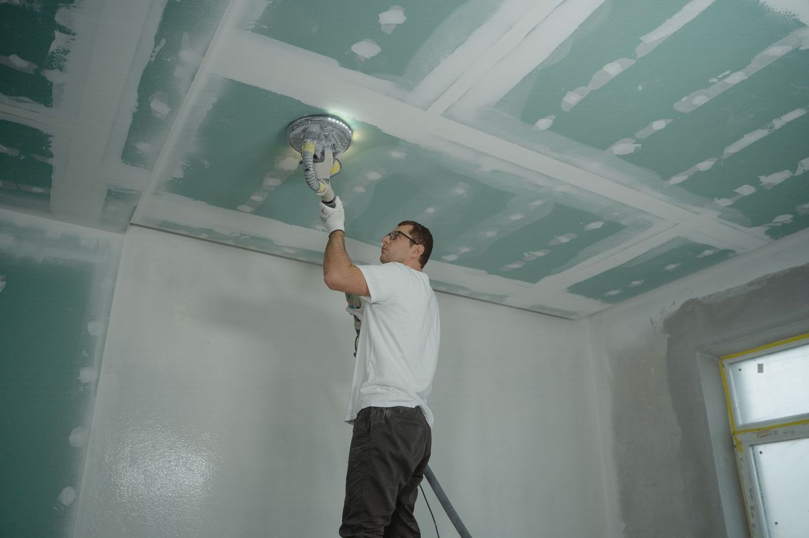

Leaking Ceiling Repair
A brown ring on the ceiling is the end of the story. The leak started somewhere else, days or months earlier.
Fix a leak in the ceiling
Leaking ceiling repair begins above the ceiling, not on it. Water travels along a joist, a truss or a sheet before it drops, so the stain is usually not under the entry point. Paint hides the evidence while damage continues into insulation and plasterboard.
We find the source first: roof, flashing, valley, geyser, plumbing or a balcony above. Then we repair it, replace soft board and treat the stain so it does not bleed through new paint.




Leaking ceiling repair: how it works
The ceiling is the last thing to fix, not the first.
Find the source
Roof, flashing, geyser, plumbing or the balcony above, traced before any ceiling work.
Get estimate →Water damaged ceiling
Soft board and blown plaster cut out and replaced, not skimmed over.
Get estimate →Ceiling stains and mould
Stain sealed and the cause treated, so it does not return with the next rain.
Get estimate →What a ceiling repair costs
| Factor | Why it moves the number |
|---|---|
| Finding the leak | An inch of ceiling access is cheaper than a second repair next winter. |
| Damage extent | A stain is a patch. A sagging board is a section replacement. |
| What is above | Roof, geyser or plumbing changes which trade does the repair. |
Most ceiling repairs are small. The expensive ones were painted over for two seasons.
Get a written leaking ceiling repair estimate
Send a photo of the stain and tell us when it appears. That usually narrows it fast.
How we work
1. Look inside
Ceiling void inspected for the path the water took.
2. Find the entry
Roof and plumbing checked, hose tested where the source is unclear.
3. Fix the cause
The leak repaired before the ceiling is touched.
4. Repair and finish
Board replaced, plastered, sealed and painted to match.
- Cause before ceiling: No point fixing plaster that will be wet again next week.
- We check the geyser: Plenty of ceiling leaks are plumbing, not roofing.
- Finish matched: Patched ceilings should not look patched.
The Plinth Standard
- Written scope + fixed price before we start
- Photo updates if you're not on site
- 12-month workmanship warranty on renovations
- Goodwood-based, fast response across Cape Town
Leaking Ceiling Repair across Cape Town
We are based in Goodwood and cover Cape Town within about 25km.